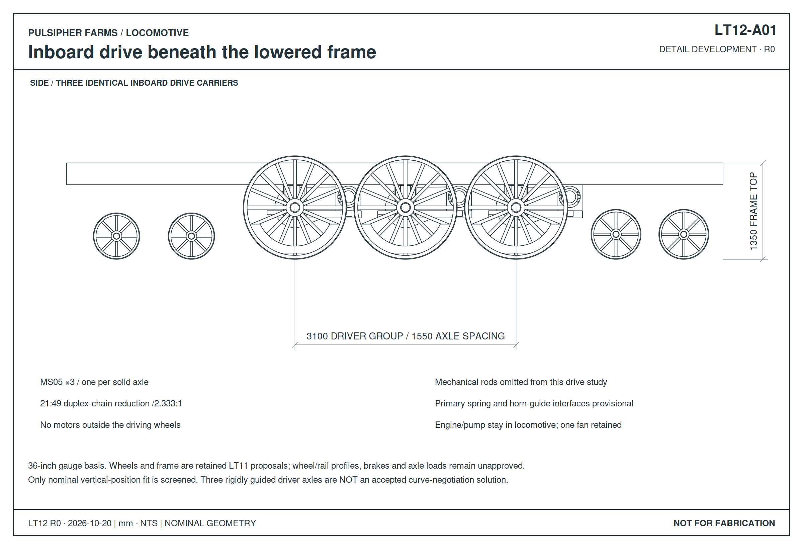
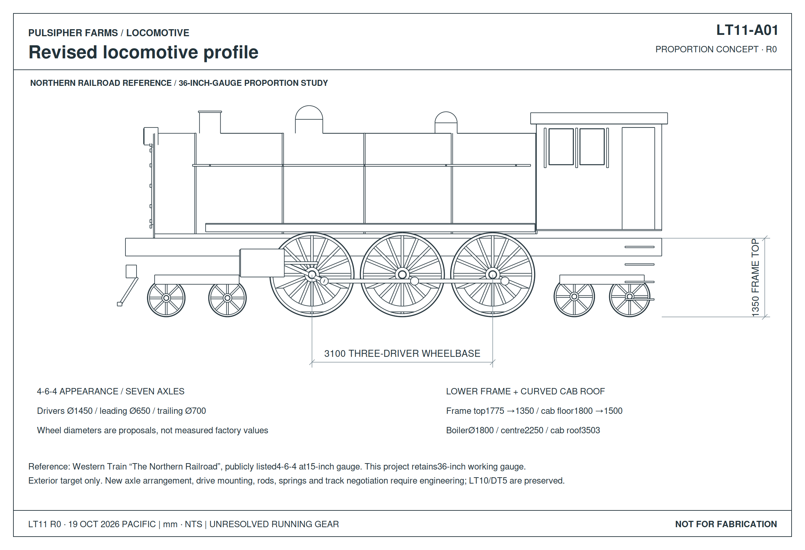
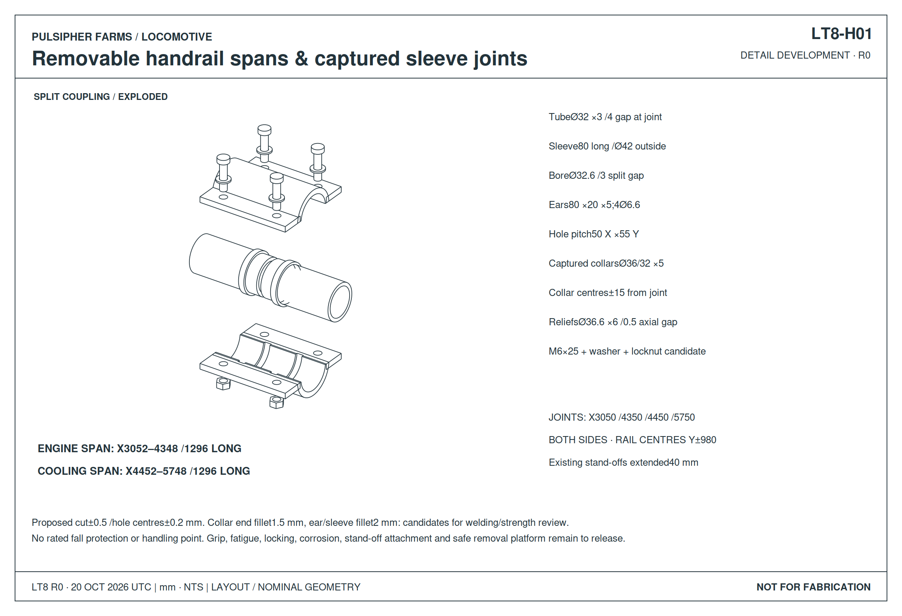

Curve clearance ↗
LT13: both curve cases expose interference. Compare placements and inspect the clashes in 3D.
CURRENT TENDER DESIGN · LT45
Existing AIE engine + separate Kubota 35 kW diesel generator → Updated cutaway, equipment layout, service space and power split. Fit, power margins and weight record →
EARLIER SHARED-ENGINE POWER / MOVEMENT REVIEW · LT42
Full power budget, revised brake routes and combined movement findings → Coach HVAC exposes a power shortfall. Brake ratings, configured controls, generator drive and hose twist remain open.
PREVIOUS HOSE AUDIT · LT36
See the unfinished hose ends and routing faults → Complete the pump, motor, brake and coach connections; correct the front branch gaps and overlapping flex leads. The audit identifies the work still needed.
CURRENT SPRING DECISION · LT35
D5 replacement, supplier requests and corrected contact checks → D5 requires excessive frame adaptation and is no longer the preferred installation. Shorter standard alternatives requested; quotation and accepted installation remain open.
Indexed lock geometry, manual-drive effort and exit time, plus unexecuted cab and camera test records. C2 remains the integrated LT32 baseline.
Open the mechanism and physical-trial review →SPRING SOURCING · LT34 REVIEW
D5-Outer main springs and G63-152 roll springs → Supplier prices and availability, revised installation drawings, and mass-updated suspension checks. Main quotation and clearance/structure holds remain open.
Left-side controls, front / last-coach cameras, dimensioned exits and a mass-reconciled LT32 assembly.
Open Cab C2 drawings and model → · Engineering →Rear frame attachment, turning movement, step clearance and brake-line connections. Open the connection model → · Engineering evidence →
STANDARD SUSPENSION BUMPER · LT33
Revised pedestal, 3D and dimensions → · Loading curves and checks →
LT26 · INSTALLATION & CONTROLS
Installation drawings and model → · Proposed brake circuit → · Checks and remaining holds →
COORDINATED LOCOMOTIVE + FIRST COACH · LT32
One coordinated 3D assembly and revised sections → · Updated engineering and interface package →
LOCOMOTIVE & TENDER
The LT27 pivot candidate and LT26 installation supplement are available as separate review views. Their 50 m and 30 m reference poses retain distinct load assumptions.
Captured pivots, rebound locks and guide attachments → · Separate engineering and review holds →
Eight drivers without the rear small wheels, weight map and layout → · Axle loads, frame bending and movement checks →
Use the AIE suction fan with the hydraulic cooler upstream. Full airflow, thermal capacity and ducting remain unconfirmed. Current installation →
Rocker-pin retention, dimensioned drawing and service view → · LT17 checks →
Spring seats, centering, stops and frame-connection drawings → · Separate engineering →
LT13: both curve cases expose interference. Compare placements and inspect the clashes in 3D.

LT12: motor, supported shaft, chain reduction and carrier beneath the lower frame. Development drawings and exploded CAD.

Earlier six-driver appearance study: lower stance, leading/trailing wheels and curved cab. Mechanical redesign remains open.

Combined body, frame, four motor-driven axles and truck connections.
Earlier separate-core layout; LT25 replaces its generic engine, radiator and fan placements.
Hatch stays, panel retention, handling and removable service connections.
Machinery cradle, engine-mount development and retained attachment details.
Main frame, equipment installation, driving station and body structure.
Pivot retention, side supports, catches and frame connections.

Retained rail-joint detail. The old cooling arrangement on that page is historical.
Open handrail drawing →Tender appearance and earlier overall dimensions remain layout references; the tender structure and complete integrated train are unfinished.
Open engineering records →